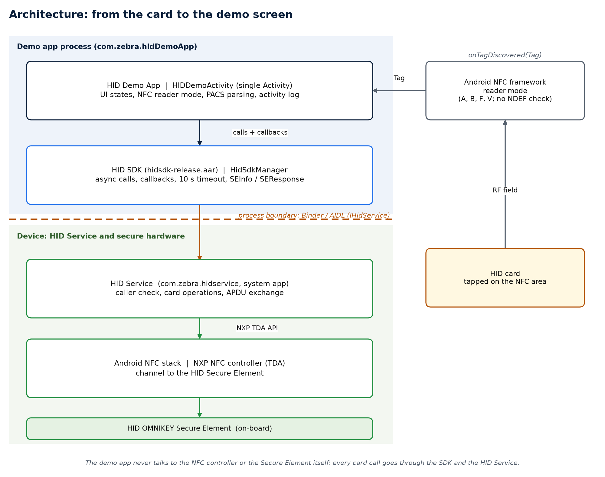
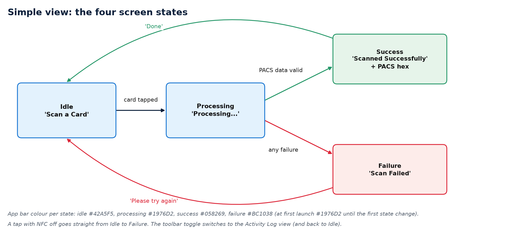
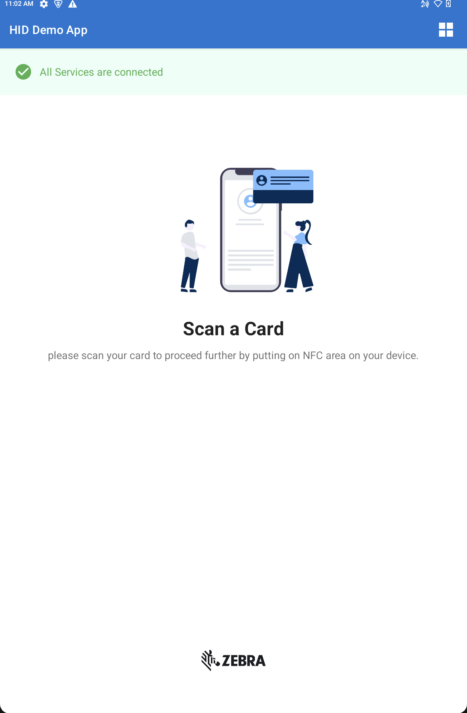
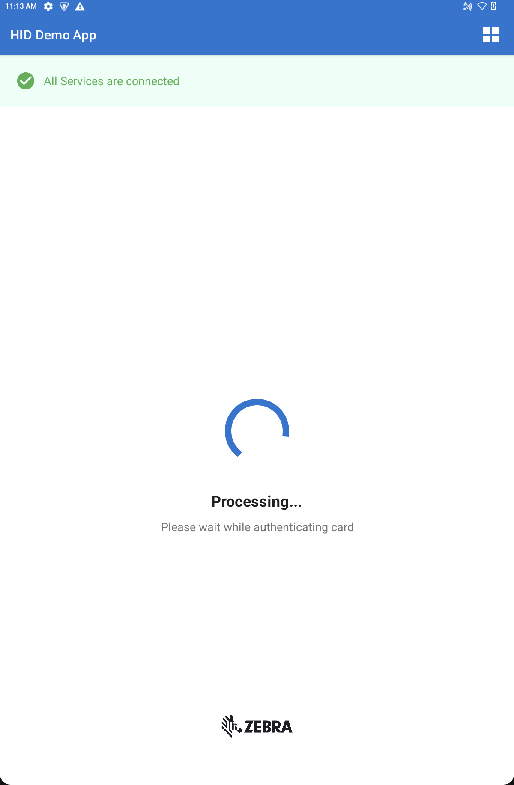
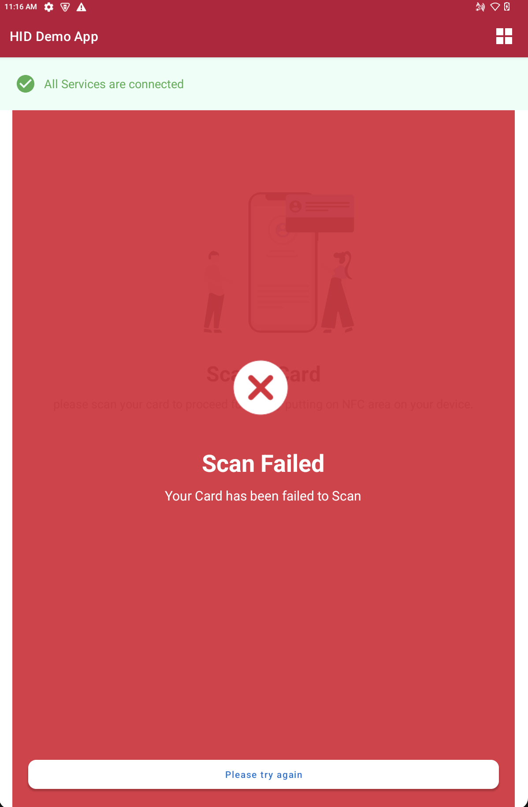
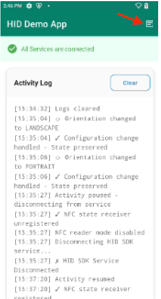

Overview
The HID Demo App is an Android application demonstrating how enterprise applications integrate with the Zebra HID SDK and the underlying HID Dispatcher service, the service running on the Zebra device responsible for HID-Secure Element communication when the SDK is used. The application configures the host device's NFC controller into Reader Mode, communicates with the internal Secure Element (SE), authenticates contactless HID smart cards, and displays the decrypted PACS payload.
Intended Audiences:
- Application Developers: Serves as a reference implementation illustrating SDK initialization, callback registration, threading policies, and PACS data parsing.
- Test Engineers & Evaluators: Provides an immediate pass/fail validation utility for confirming NFC credential compatibility and service connectivity.
Architecture
The demo app sits on top of the HID SDK, which hides the Binder call to the HID Service. The HID Service manages the NFC controller channel to the HID Secure Element. The demo app never communicates directly with the NFC controller or the Secure Element itself.

For more details, refer to Architecture from the Developer Guide.
Design Principles
Architectural design principles for the Demo App:
- Single-Activity: All screen states, layouts, and activity logs are managed by
HIDDemoActivity. - Asynchronous Execution: All SDK calls execute asynchronously and deliver their results through a callback with a 10-second timeout. Precondition error (such as null tags or unbound services) return immediately.
- Reader Mode Operation: The activity enables Android reader mode rather than intent filters. Reader mode is restricted strictly to foreground operation and is deactivated when paused.
- Access Control: The app requires only the NFC permission declaration in its manifest. Access to the HID Secure Element is enforced by the HID service.
- Thread Confinement: SDK results and NFC callbacks (e.g.,
initiateHIDCommunication,isCardHID,getAuthenticatedData) do not run on the Android main UI thread. The application wraps all UI updates insiderunOnUiThread()and does not create threads of its own.
User Interface & States
The application transitions across four distinct UI states: Idle, Processing, Success, and Failed.

Application Screens
| State | Primary Screen Element | Description/Instruction | Screen Capture |
|---|---|---|---|
| Idle | Card Scan | Tap or align the card to scan. This screen appears when launching the app, after completing a scan, or when directed to try again. |  |
| Processing | Circular Progress Indicator | Displayed while communicating with the card to read credentials. |  |
| Success | Successful card scan | Displayed after card authentication completes successfully, presenting the PCS payload and a Done button. | |
| Failed | Failed to scan the card | Displayed when card authentication or communication fails, prompting the user to try again. View the Activity Log for more details; see Failed Scan Errors. |  |
| Activity Log | Timestamped Event Trace | Tap the icon in the upper-right corner of the title bar to open the Activity Log. It displays a timestamped trace of service status, NFC lifecycle events, and card read diagnostics. Use the Clear button to reset the log, or tap the icon to switch back to the card scan screen. |  |
Lifecycle & State Management
The application actively monitors Android system NFC state changes and Activity lifecycle transitions to maintain service stability and hardware operation. When NFC is disabled, the application displays an NFC dialog prompting the user to enable NFC in system settings. The table below details the application's behavior across lifecycle events:
| Event | Application Action |
|---|---|
| App Launched with NFC Disabled | Status message indicates NFC is off. Does not connect to the HID Service. Displays the NFC dialog. |
| App Launched or Resumed with NFC Enabled | Automatically dismisses the NFC dialog, enables reader mode and initializes service connection or reconnection. |
| NFC Disabled While App is Open | Disables reader mode, disconnects service, and displays the NFC dialog. Status message indicates NFC is off. If the service was previously connected, the SDK reports the disconnect, and the status message indicates the HID Dispatcher is not connected. |
| NFC Enabled While App is Open | Automatically dismisses the NFC dialog, enables reader mode, and reconnects or connects to the service. |
| App Shifts to Background | Disconnects from service (displayed in status message) and disables reader mode. |
| App Terminated | Invokes cleanup() SDK method. |
| App Launched with NFC Disabled | Status message indicates NFC is off, displays the NFC dialog, and does not connect to the HID Service. |
| Scan Card While NFC is Disabled | Scan failed screen appears, and status and toast message indicates NFC is off. |
Key Methods
HIDDemoActivity Methods
| SDK Method | Purpose |
|---|---|
onCreate() |
Builds the UI and checks the NFC status. If NFC is "off," the NFC dialog displays. If NFC is "on," it connects to the HID Service. |
onResume() |
Registers the NFC state receiver. If NFC is "on," it enables reader mode, then connects or reconnects (if the SDK manager already exists) to the HID service. Otherwise, the NFC dialog displays. |
onPause() |
Unregisters the NFC receiver, disables reader mode, and disconnects from the HID service. |
onDestroy() |
Dismisses the dialog and invokes cleanup() on the SDK manager. |
connectToHIDService() |
Creates the HidSdkManager with a connection callback. |
initializeHidCommunication() |
Calls initiateHIDCommunication(), logs the SEInfo it returns and |
enableReadPassMode() / disableReadPassMode() |
Turn on/off the NFC reader (flags A, B, F, V and skip-NDEF-check). |
onTagDiscovered() |
Captures the physical tag, invokes isCardHID(), and triggers getAuthenticatedData(). |
parsePacsData() |
Reads the status byte and the PACS value. |
showSimpleViewState() |
Switches between the Idle, Processing, Success and Failure screens according to the operational state. |
showSuccess() / showFailure() |
Displays the respective result screen. For showFailure(), the error reason is recorded exclusively in the activity log rather than shown in the result screen. |
updateServiceStatus() |
Updates the status message banner at the top of the user interface. |
handleNfcEnabled() / handleNfcDisabled() |
React to NFC being switched on or off while the app is open. |
showNfcDisabledDialog() |
Shows the "NFC is Disabled" dialog with Enable NFC and Exit buttons. |
toggleView() |
Switches the interface between the high-level Simple View and the diagnostic Detailed (Log) View. |
HID SDK Methods Used by the Demo
| SDK Method | Purpose | Associated Callback & Payload |
|---|---|---|
new HidSdkManager(context, ConnectionCallback) |
Binds the application to the HID service. | onConnected(), onDisconnected(), onError(String) |
initiateHIDCommunication(callback) |
Starts the HID communication. | onSuccess(SEInfo), onError(String) |
isCardHID(tag, callback) |
Checks if the presented card is a HID card. | onSuccess(SEResponse), onError(String) |
getAuthenticatedData(tag, callback) |
Read the PACS data. | onSuccess(SEResponse), onError(String) |
disconnect() |
Releases the service connection. | ConnectionCallback.onDisconnected(); |
reconnect() |
Re-acquires the service connection. | onConnected() or onError() |
cleanup() |
Releases all SDK resources and unbinds from the HID service. | N/A |